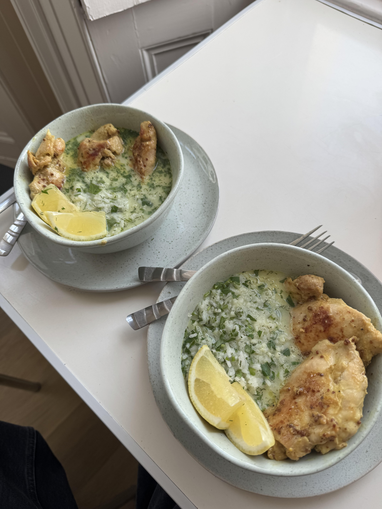

Garlicky Mustard Chicken & Zingy Broth with Rice
Lovely umami flavours. Lots of punchy notes. High protein and perfect for the cold season.

Ingredients (4 servings)
- 8 Boneless Skinless Chicken Thighs
- Olive Oil
- 2 tbsp Wholegrain Mustard
- 2 Garlic Cloves
- 10g Dill
- 25g Parsley
- 3 Egg Yolks
- 2 Lemons
- 700ml Chicken Stock
- 500g Cooked Rice
- Salt
- Pepper
Instructions
- Add the chicken thighs and mustard to a bowl. Grate over the garlic and drizzle over some oil. Season generously with salt and pepper and give it a good mix. Set aside.
- Reserve a few dill and parsley leaves for garnish and finely chop the rest, stalks included.
- Heat a frying pan with a drizzle of oil over a medium-high heat. Add the marinated chicken and cook on both sides until slightly charred and cooked through.
- Reheat the cooked rice and stir through the herbs.
- Heat the stock in a saucepan over a medium heat. Whisk the egg yolks in a small bowl with the juice of half your lemons then pour the egg mixture into the hot stock. Whisk vigorously until it starts to thicken slightly. Season with salt, pepper and more lemon juice to taste (you want it quite tart).
- Share the rice between four bowls and ladle over the broth. Top with the chicken and reserved herbs. Serve with any remaining wedges of lemon.
Back home